Soglie Rifiuti
Amministratore centraleUna panoramica dei flussi relativi alla gestione delle soglie rifiuti, per orientarti passo dopo passo.
01.
Crea nuova configurazione
Panoramica sulla creazione di una nuova configurazione di soglie rifiuti.
Punto di accesso
La voce di menù
Dalla dashboard, è possibile accedere alle principali sezioni tramite le voci di menu.
Menu a tendina
Cliccando sulla voce "Configurazioni" viene visualizzato un menu a tendina, da cui è possibile accedere a "Soglie rifiuti".
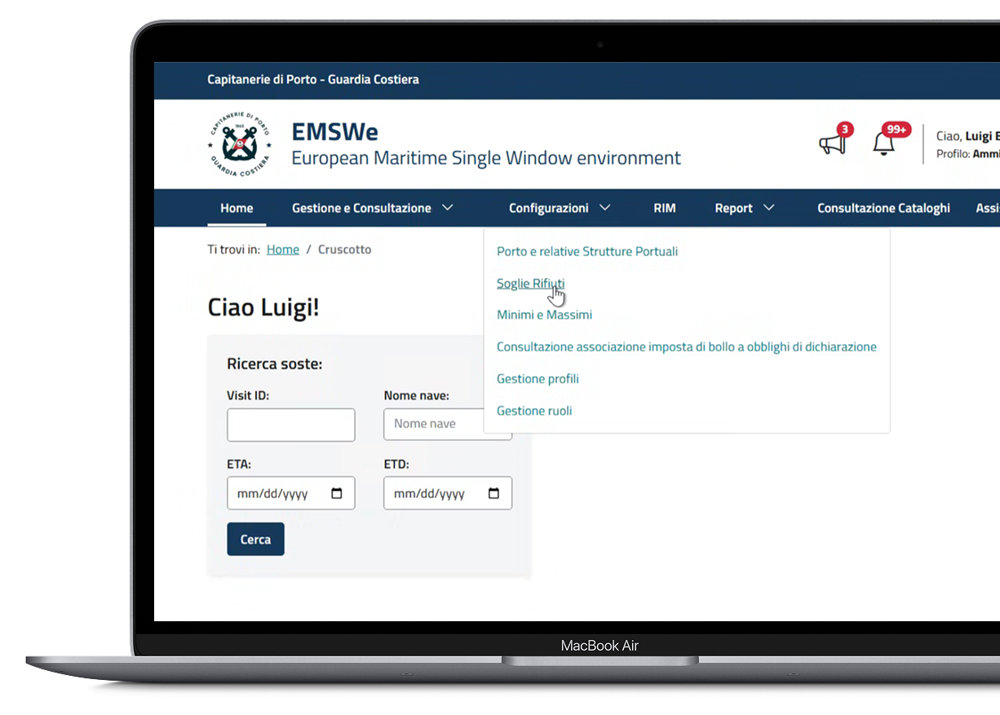
Creazione nuova configurazione soglie rifiuti
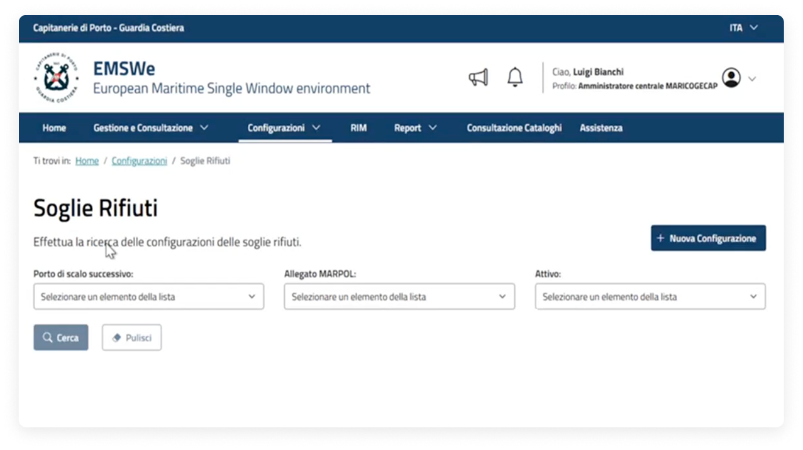
Dopo aver effettuato l'accesso alla pagina "Soglie rifiuti", cliccare sul pulsante "Nuova configurazione" per avviare il flusso di creazione.
Creazione Configurazione
Passaggi per creare una nuova configurazione
Per creare una nuova configurazione è necessario che l'utente compili i campi obbligatori.
Inserimento delle informazioni
Per procedere con la configurazione della Soglie rifiuti è necessario valorizzare i campi: "Porto di scalo successivo", "Allegato MARPOL", "Soglia UWC (%)". Indicare se la configurazione è attiva, il campo è prevalorizzato a "Sì" ma comunque modificabile.
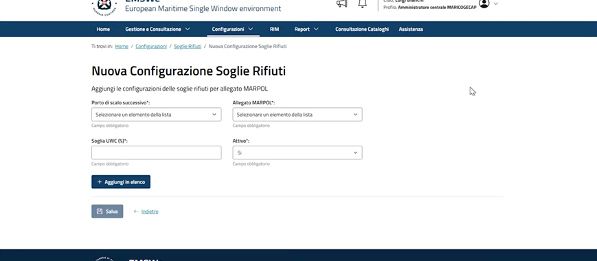
Aggiungi in elenco
Una volta inserite tutte le informazioni utili alla creazione di una nuova configurazione, cliccare sul pulsante "Aggiungi in elenco" per aggiungerla all'Elenco delle configurazioni.
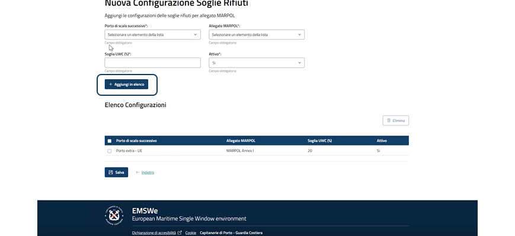
Elimina configurazione
È possibile eliminare una o più configurazioni all'interno della lista selezionando le configurazioni di interesse e successivamente cliccare sul pulsante "Elimina".
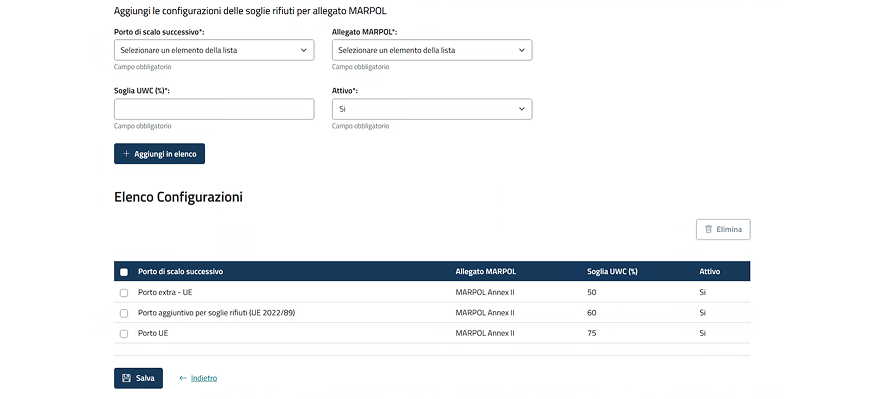
Salvataggio e conferma
Verificato il corretto inserimento delle configurazioni selezionare il pulsante "Salva". Dopo aver confermato l'operazione tramite una finestra che apparirà sullo schermo la configurazione verrà salvata a sistema.
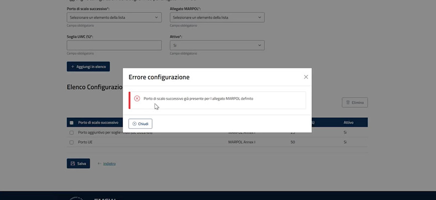
Creazione Configurazione
Gestione elenco
Dopo aver cliccato il pulsante "Nuova configurazione", seguire tutti i passaggi indicati a sistema e inserire le informazioni necessarie per completare la creazione della nuova configurazione.
Elenco configurazioni
È possibile aggiungere ulteriori configurazioni compilando nuovamente tutte le informazione cliccando sul pulsante "Aggiungi in elenco".
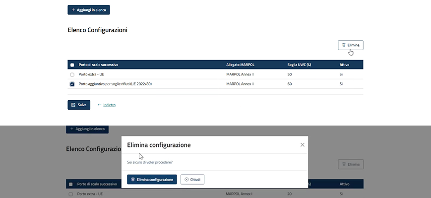
Errore configurazione
Se viene inserita una configurazione con gli stessi parametri di una già esistente, il sistema rileva automaticamente il duplicato e mostra un messaggio di errore a schermo.
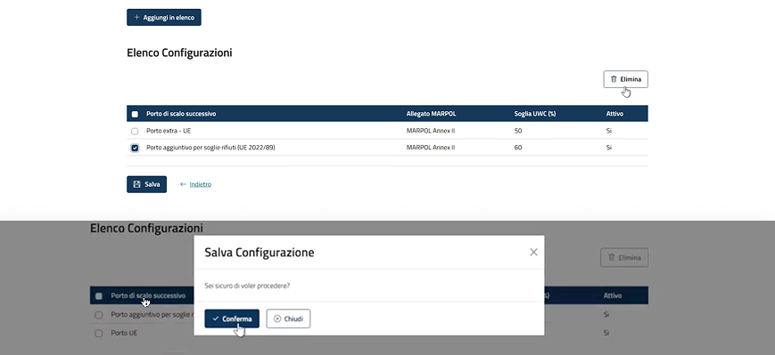
Nel caso in cui si cerchi di inserire una configurazione già presente all'interno della lista, viene visualizzato un alert che informa l'utente della presenza già registrata.
02.
Modifica configurazione
Panoramica sulla modifica di una configurazione di soglie rifiuti esistente.
Punto di Accesso della modifica di una configurazione Soglia rifiuti
Attivazione "Modifica" dall'elenco risultati di ricerca
Nell'elenco risultati della ricerca è possibile accedere al dettaglio in modalità modifica cliccando sull'"icona della matita".
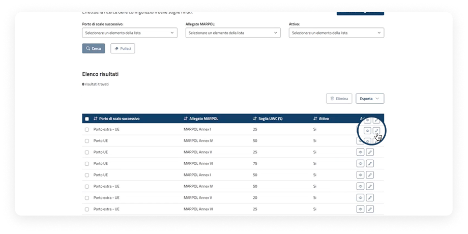
Attivazione Modifica da pagina di dettaglio della configurazione
Nell'elenco risultati della configurazione è possibile accedere al dettaglio in modalità visualizzazione cliccando sull'"icona dell'occhio". All'interno del dettaglio per procedere con la modifica sarà necessario cliccare sul pulsante "Modifica".
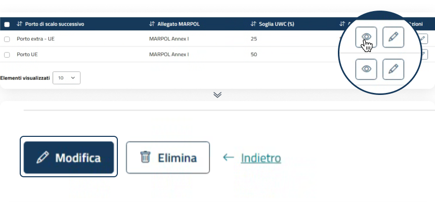
Modifica configurazione
Passaggi per modificare una configurazione
Dopo aver cliccato il pulsante "Modifica", segui tutti i passaggi indicati a sistema e inserisci le informazioni necessarie per completare la modifica della configurazione.
Modifica della configurazione selezionata
Le informazione modificabili sono Soglia UWC (%) e Attivo (Sì/No), dopo aver effettuato le modifiche è possibile salvare nuovamente la configurazione cliccando sul pulsante "Salva".
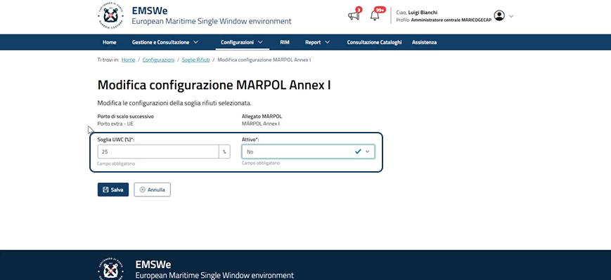
Salvataggio e conferma
Il sistema mostra una finestra di conferma, chiedendo all'utente se è sicuro di salvare la configurazione. Infine, dopo aver cliccato il pulsante "Conferma", il sistema informerà l'avvenuto salvataggio della configurazione.
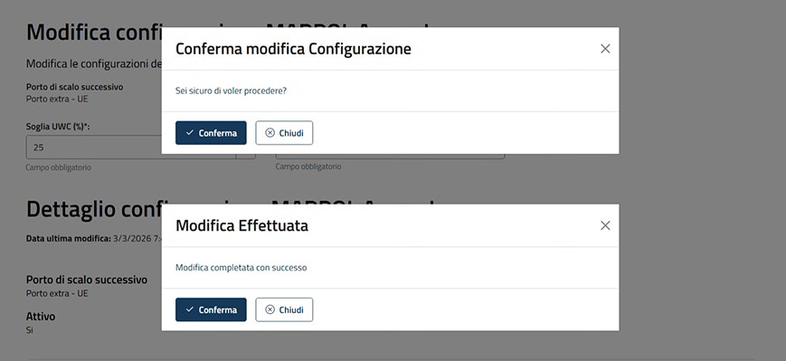
03.
Elimina configurazione
Panoramica sull'eliminazione di una configurazione di soglie rifiuti.
Elimina configurazione
Passaggi per eliminare una configurazione
Dopo aver salvato una configurazione l'utente può eliminarla secondo le seguenti modalità.
Eliminazione in tabella
Dopo aver selezionato una o più configurazione e cliccato su elimina il sistema mostra una finestra di conferma eliminazione, per procedere cliccare su "Elimina configurazione".
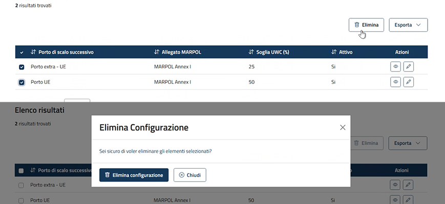
Eliminazione all'interno del dettaglio
All'interno del dettaglio di una configurazione è possibile eliminarla tramite l'apposito pulsante "Elimina", presente in fondo alla pagina.
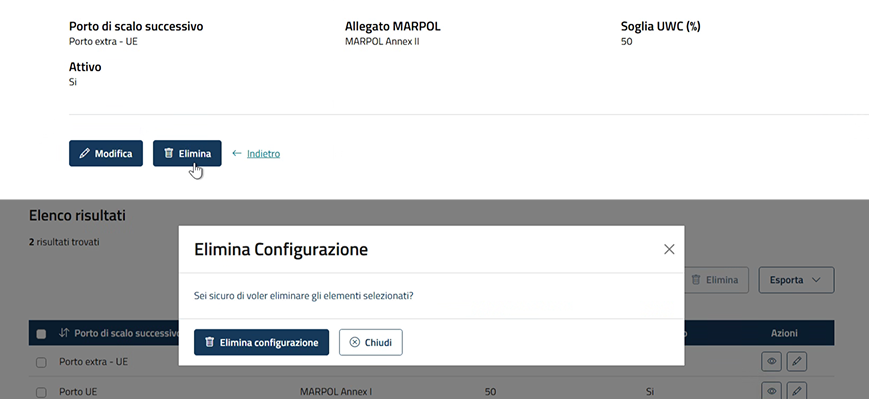
04.
Ricerca e Visualizzazione
Panoramica sulla ricerca e sulla visualizzazione delle configurazioni di soglie rifiuti.
Punto di accesso
La voce di menù
Dalla dashboard, è possibile accedere alle principali sezioni tramite le voci di menu.
Menu a tendina
Cliccando sulla voce "Configurazioni" viene visualizzato un menu a tendina, da cui è possibile accedere a "Soglie rifiuti".
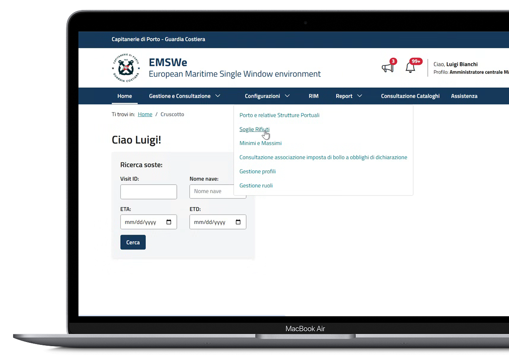
Ricerca configurazione
Soglie rifiuti
In questa pagina l'utente può visualizzare ed esportare l'elenco delle configurazioni relativo alle soglie rifiuti.
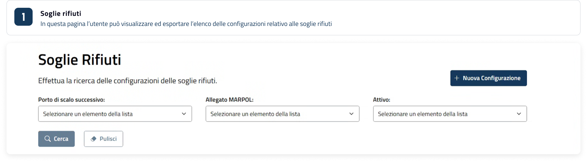
È possibile avviare la ricerca utilizzando i filtri disponibili oppure applicare criteri aggiuntivi per affinare i risultati. La schermata è suddivisa nelle seguenti sezioni:
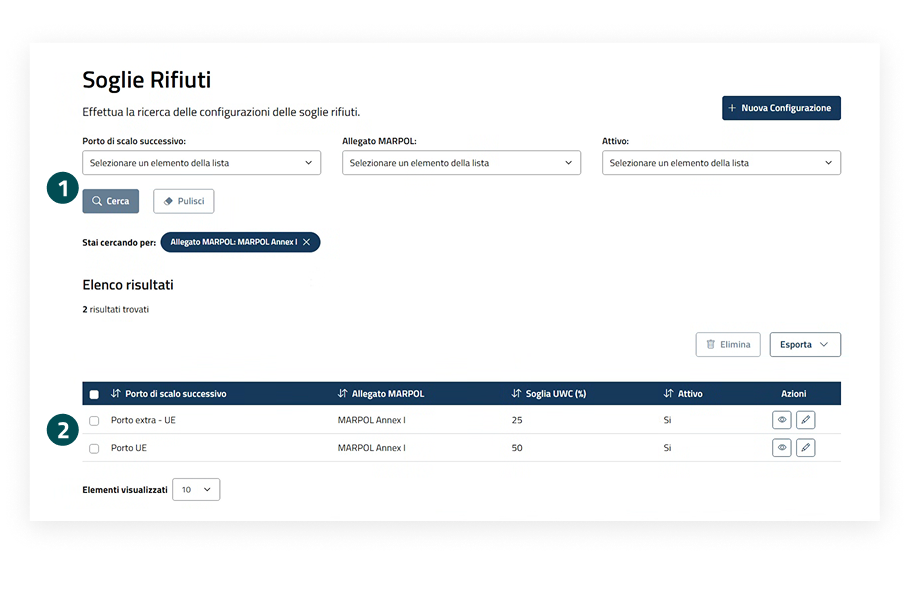
Sezione filtri
La sezione Filtri consente di ricercare le configurazione secondo diversi criteri. Sono disponibili i filtri, come "Porto di scalo successivo", "Allegato MARPOL" o "Attivo". È necessario inserire almeno uno dei valori presenti per avviare il flusso di ricerca.
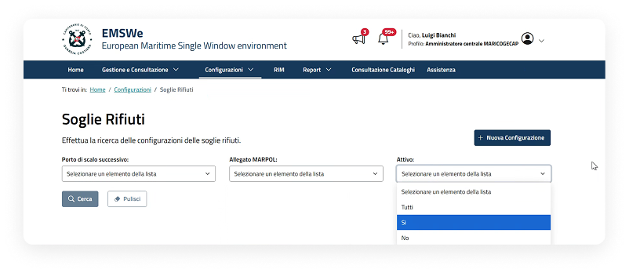
Visualizzazione richiesta tramite tabella
I risultati della ricerca vengono presentati in una tabella, mostrando le informazioni principali e le azioni disponibili.
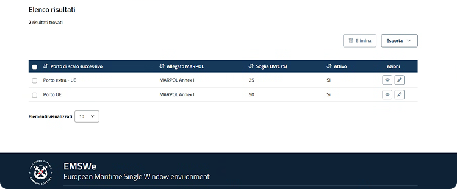
Configurazione soglie rifiuti
Visualizzazione dettaglio Configurazione soglie rifiuti
All'interno della pagina sono consultabili le seguenti informazioni:
- Data ultima modifica;
- Porto di scalo successivo;
- Allegato MARPOL;
- Soglia UWC (%);
- Attivo.
Possibili azioni sulla configurazione:
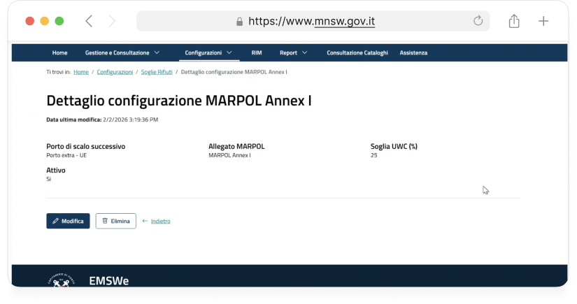
Funzionalità configurazioni
Ricerca e visualizzazione
Elimina
Al click sul pulsante "Elimina" sarà possibile andare ad eliminare tutte le configurazioni selezionate.
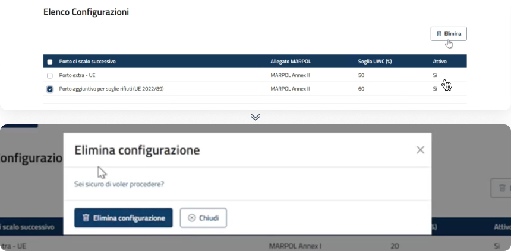
Esporta
Al click sul pulsante "Esporta" sarà possibile andare ad esportare tutte le configurazioni attive in PDF o XLS.
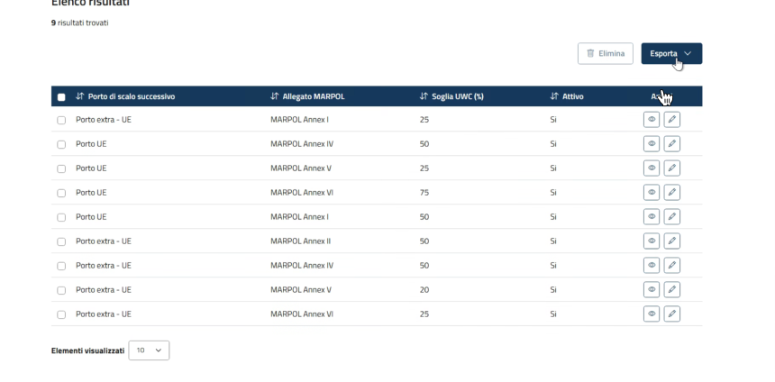